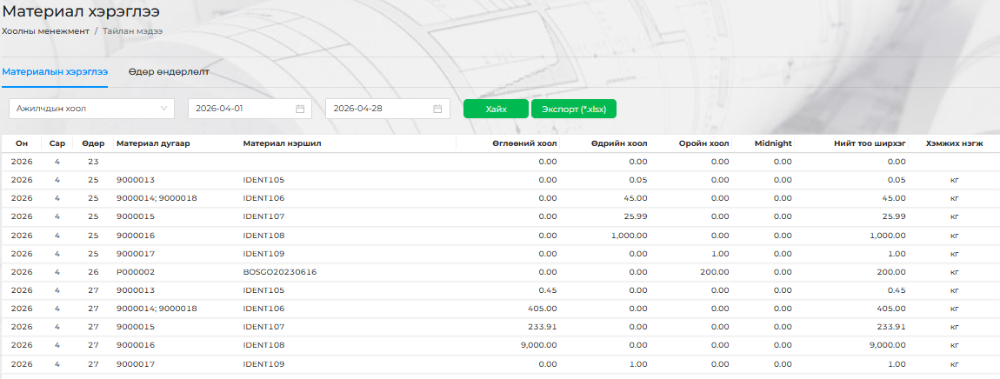

<h2 style="background-color: skyblue;">Материал хэрэглээ</h2>
<p>Ажилчдын хоолны материалын тоо ширхэг.</br>
<div style="display: flex; justify-content: center; align-items: center;">
    
</div>
</p>